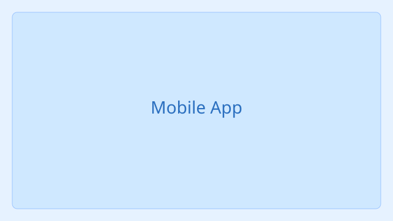
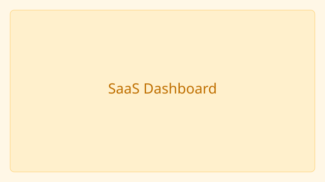
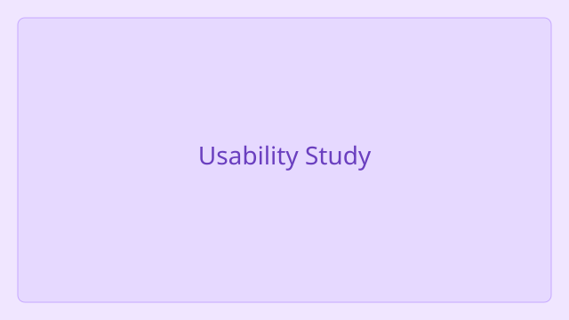
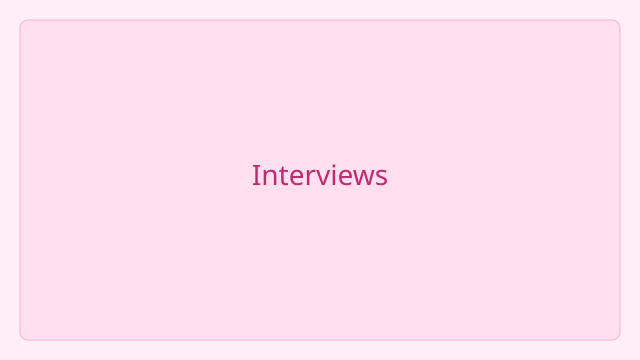
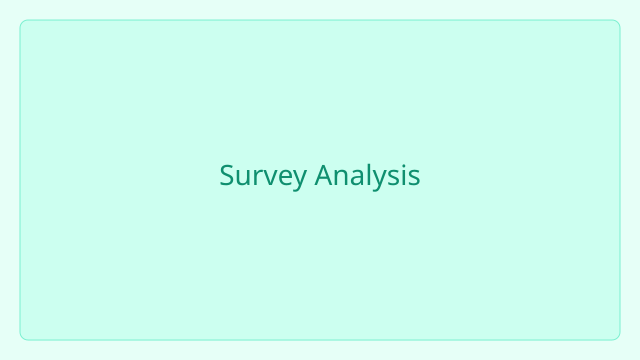
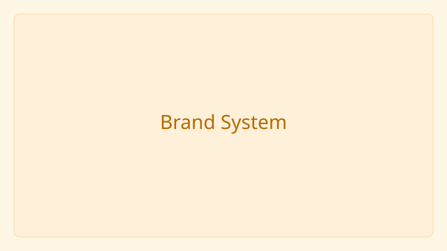
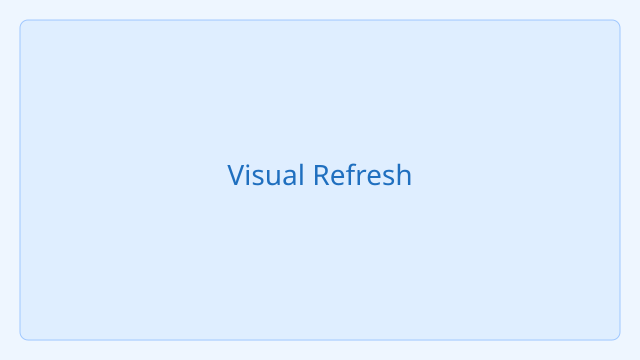

Mobile App Redesign
Revamped onboarding and navigation to increase retention for a consumer app.

Revamped onboarding and navigation to increase retention for a consumer app.

Designed dashboards and reporting flows for analytics platform customers.

Optimized multi-step checkout to reduce friction and boost conversions.

Moderated usability tests with prototypes to validate information architecture.

Qualitative interviews to surface pain points and priorities for roadmap planning.

Analyzed quantitative feedback to identify feature opportunities and segmentation.

Created logo, type, and color guidelines for a startup identity.

Updated UI kit and marketing assets for cohesive look-and-feel across channels.

Design templates and visual assets for multi-channel brand campaigns.